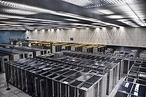

- Internet Service Provider
- Cloud Betreiber
- Rechenzentrum
Cloud
- IaaS
- PaaS
- SaaS
- Server, Storage...
Rechenzentrum (Datacenter)
- Gebäude/Räume
- Hardware
- Bereitstellung von Diensten und Daten
- Kritische Infrastruktur

- ~11.000 weltweit
- USA, UK, Germany
Carrier
- Carrier = Netzbetreiber
- carrierneutral -> bietet mehrere Netzbetreiber an
- 57 "Carrier"
- Günstig und hohe Qualität
- Direktanbindung an hohe Bandbreiten
(622Mbit/s-2.5Gbit/s)
- Meet-Me-Points (MMP)
- Dark Fiber
Colocation
Auch Serverhousing oder Serverhoming genannt
Hardware vom Kunden, Fläche des Rechenzentrums
- Energieversorgung
- Netzwerkanschluss
- Sicherheit
- Klimatisierung